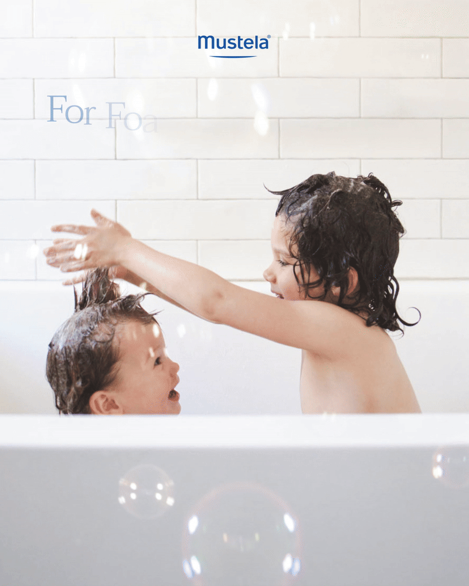
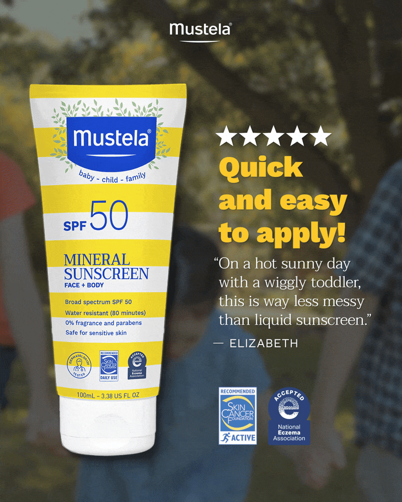
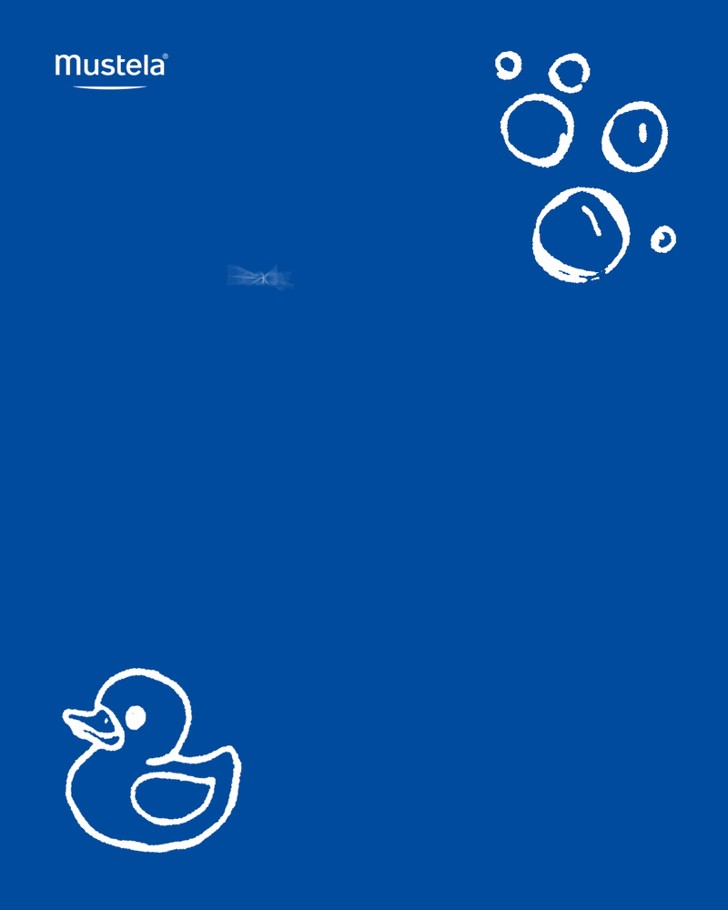
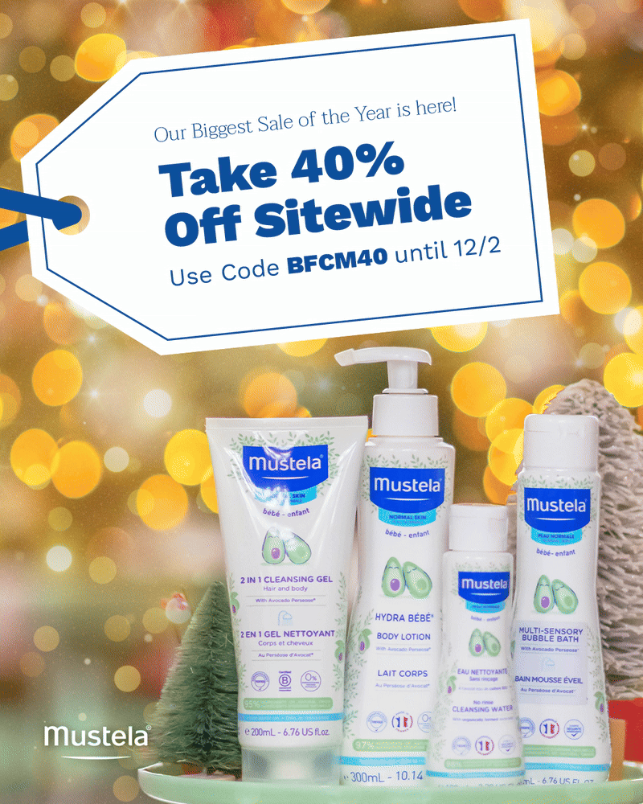
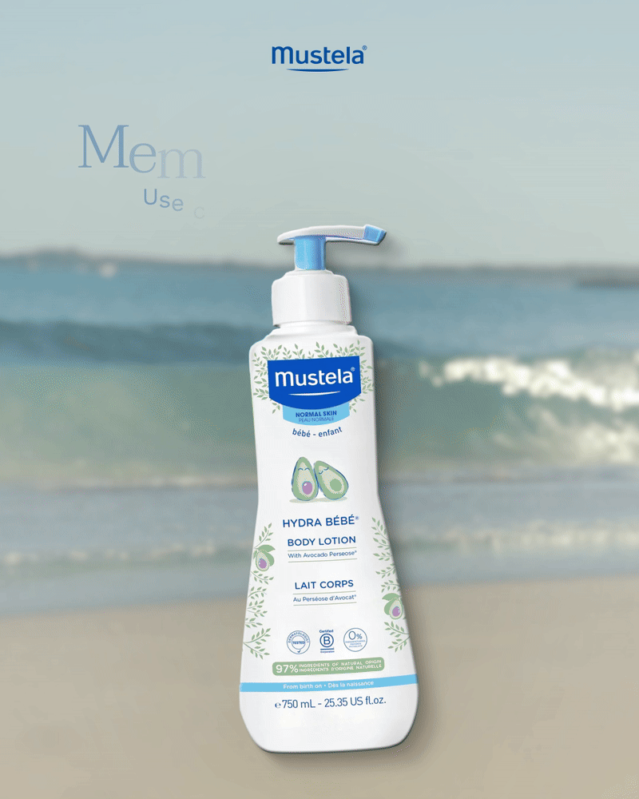
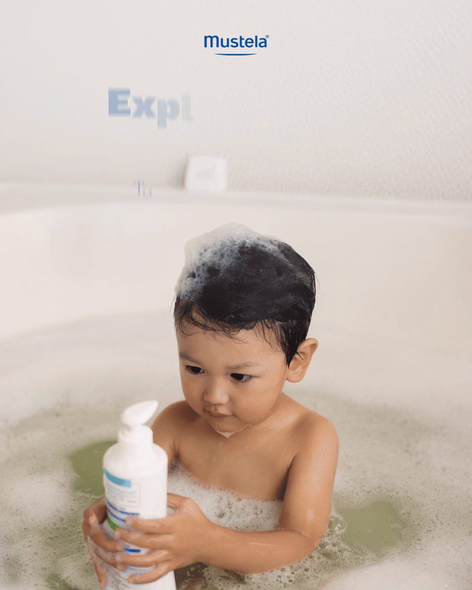

SINCE 2024
Mustela Campaigns









Primary Designer
As the primary designer for Mustela at Superbolt, I’ve led the creative direction for an evolving series of campaigns for this beloved baby skincare brand. Over time, we’ve explored a variety of creative approaches—continually testing, learning, and refining based on performance data and brand goals.
Maintaining brand consistency is especially crucial for Mustela. As a skincare brand designed specifically for babies and young children, every asset must reflect the warmth, gentleness, and playfulness at the heart of its identity. We incorporate whimsical, hand-drawn doodles into our static assets and quick, punchy animations for our motion assets. I keep the visual language elevated through a clean, calming blue palette—a signature look that runs through much of the brand’s advertising. Product-specific color palettes are woven in where needed to distinguish specific product lines while preserving visual cohesion.
Most campaigns are sale-driven rather than product-led, which makes thematic clarity key. From seasonal moments (like stars and red-white-blue for July 4th) to sitewide promotions, I focus on building design systems that unify the sale concept. I use bold typography and clearly marked price callouts to highlight discounts and convey the value proposition upfront—ensuring each ad feels both on-brand and conversion-focused.
These campaigns are launched across Meta Platforms and Google, and created with Adobe After Effects and Photoshop.